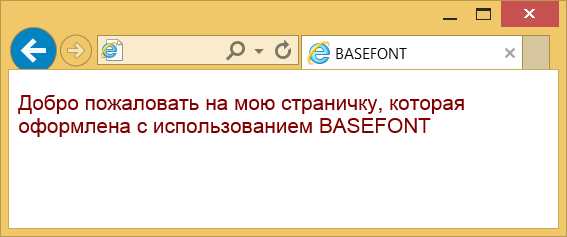

Элемент <basefont>
| Internet Explorer | Chrome | Opera | Safari | Firefox | |
| 2 | 10 | ||||
| Android | Firefox Mobile | Opera Mobile | Safari Mobile |
Элемент <basefont> предназначен для задания шрифта, размера и цвета текста по умолчанию. Указанные значения будут использоваться во всём документе за исключением элемента <font>, в котором можно переопределить параметры оформления текста. Допускается использование в контейнере <head> или <body>, причём несколько раз. Это позволяет изменять вид шрифта для части документа.
Это нестандартный элемент, вместо него используйте стили.
Синтаксис
<basefont атрибуты>Закрывающий тег
Аттрибуты
- color
- Устанавливает цвет текста.
- face
- Определяет гарнитуру шрифта.
- size
- Задаёт размер шрифта в условных единицах.
Пример
<!DOCTYPE HTML PUBLIC "-//W3C//DTD HTML 4.01 Transitional//EN"
"http://www.w3.org/TR/html4/loose.dtd">
<html>
<head>
<meta http-equiv="Content-Type" content="text/html; charset=utf-8">
<title>BASEFONT</title>
</head>
<body>
<basefont face="Arial, Helvetica, sans-serif" size="4" color="maroon">
<p>Добро пожаловать на мою страничку, которая оформлена с использованием
BASEFONT</p>
</body>
</html>Результат данного примера показан на рис. 1.

Рис. 1. Вид текста в браузере Internet Explorer
Спецификация
Каждая спецификация проходит несколько стадий одобрения.
- Recommendation (Рекомендация) — спецификация одобрена W3C и рекомендована как стандарт.
- Candidate Recommendation (Возможная рекомендация) — группа, отвечающая за стандарт, удовлетворена, как он соответствует своим целям, но требуется помощь сообщества разработчиков по реализации стандарта.
- Proposed Recommendation (Предлагаемая рекомендация) — на этом этапе документ представлен на рассмотрение Консультативного совета W3C для окончательного утверждения.
- Working Draft (Рабочий проект) — более зрелая версия черновика после обсуждения и внесения поправок для рассмотрения сообществом.
- Editorʼs draft (Редакторский черновик) — черновая версия стандарта после внесения правок редакторами проекта.
- Draft (Черновик спецификации) — первая черновая версия стандарта.
Особняком стоит живой стандарт HTML (Living) — он не придерживается традиционной нумерации версий, поскольку находится в постоянной разработке и обновляется регулярно.